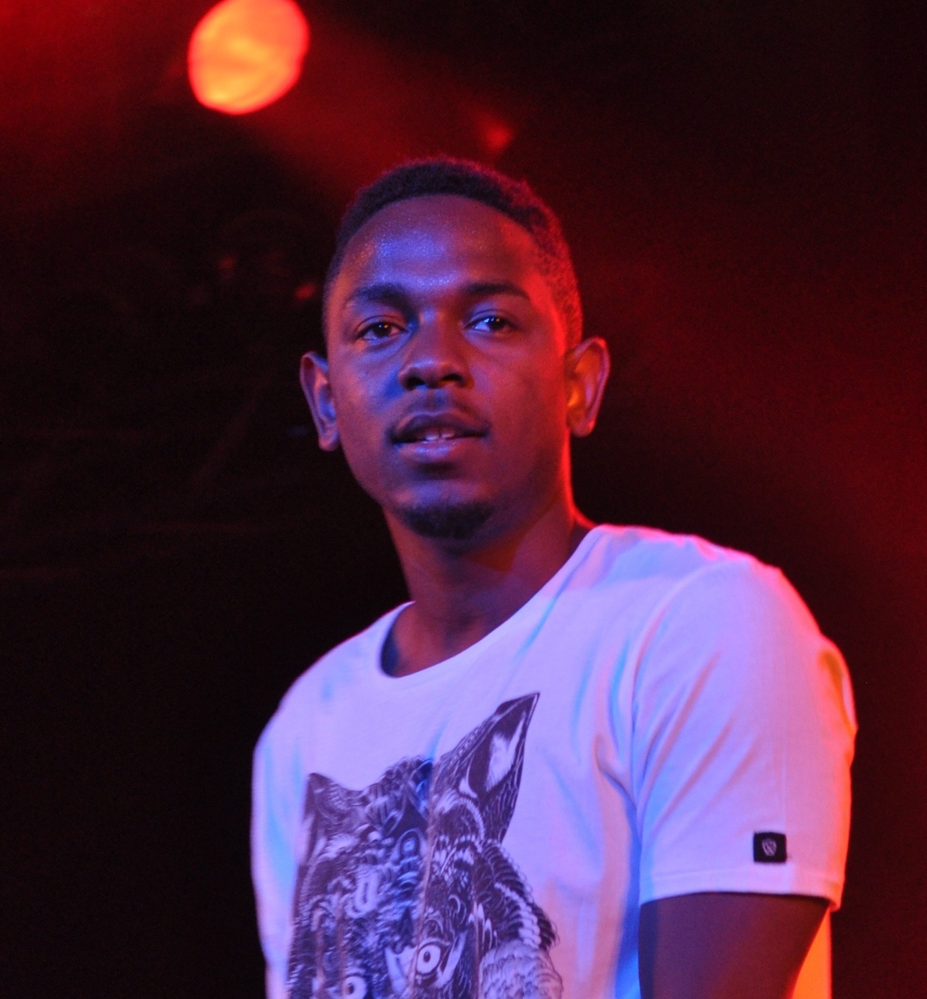
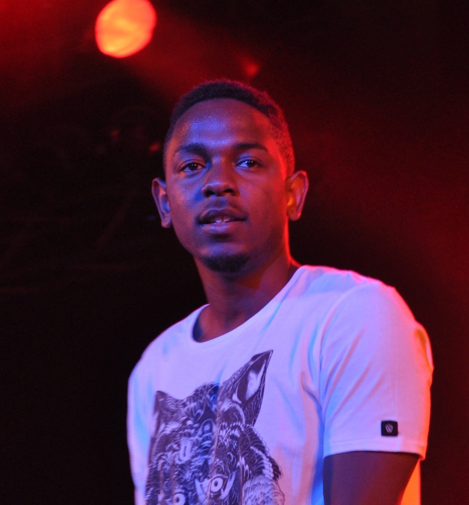
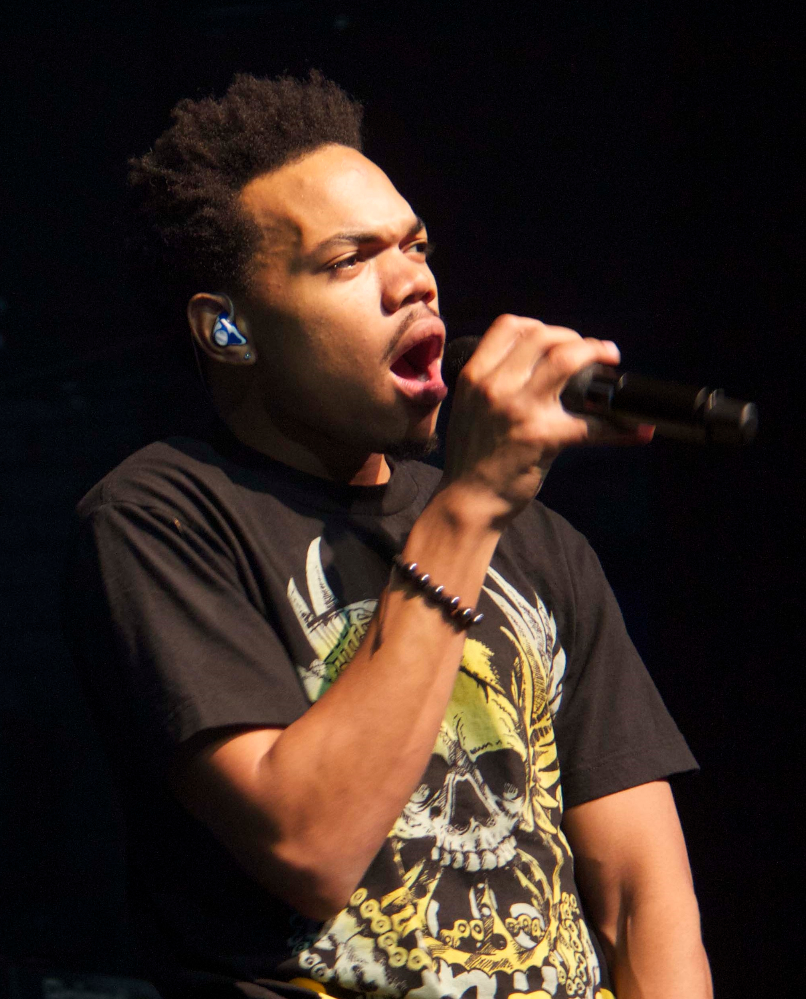
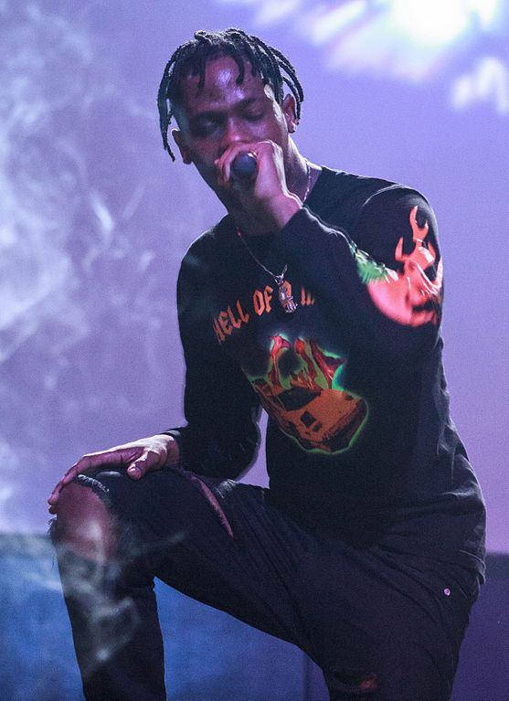
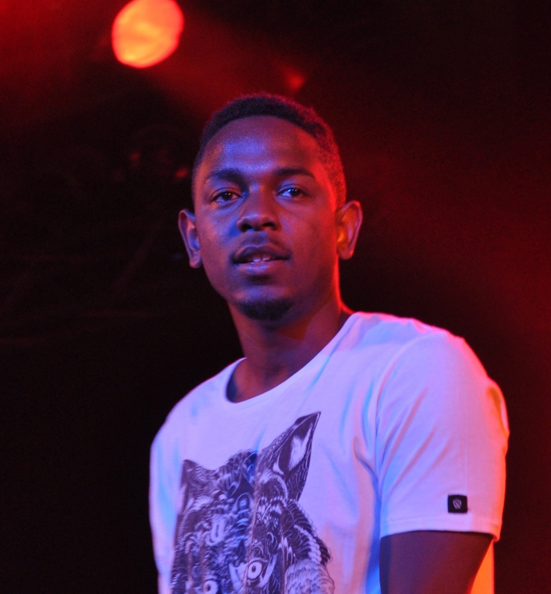

Music has been something that I have apprecited for a very long time. I was always exposed to music, but I did not love music the way I do now before I moved to the United States of America. In Korea, I grew up listening to a lot of KPOP and some well known songs from the Western world. I never really paid much attention to the lyrics or the messages that songwriters were trying to convey. I moved to the United States of America when I was in fifth grade and this was when I started paying more attention to music. Until about middle school, I was just listening to hit songs from radio stations. After I got into high school, I started listening to music with more depth. I delved into the different kinds of genre in music and found out that I really loved Hip Hop out of all the genres. I became a fan of Hip Hop since then and Hip Hop has been a big part of my life ever since. Now I am following countless Hip Hop artists and looking forward to new music on an everyday basis. Since I knew I loved music so much, I decided to talk about some of my favorite albums and artists I have discovered since listening to music.



Top 3 Albums at the moment:
| Artists | Reasons why I love this artist | Link to the artist's Wikipedia |
|---|---|---|
| ASAP Rocky | ASAP Rocky has one of the better flows and wordplay in the game at the moment in my opinion. His production since his mixtapes days has drastically improved and all of the work that he has put out is very enjoyable to listen to. Some of my favorite albums from ASAP Rocky include: ALLA, Long Live ASAP. | ASAP Rocky |
| Chance the Rapper | Chance called himself Kanye's best prodigy and it is very hard to argue with that statement. Every since gaining tremendous buzz from his 10Day mixtape, Chance has been putting out quality work consistently, deeming many to believe that he is one of the best rappers in the game right now. His unique ability to make his flow sound amazing is unmatched by his ability to create a mood in a song very effectively. Some of my favorite projects from Chance the Rapper include: The Coloring Book, Acid Rap. | Chance the Rapper |
| Travis Scott | Nobody knew who Travis Scott was until about four years ago when he gained some buzz by working on Kanye West's Yeezus album. His finished products sound unlike any songs in Hip Hop, with his effective use of autotune and production to create masterpeices over and over again. A lot of people were skeptical about Travis Scott's creativity and his ability to create unique sounding songs, but he has proven that he is able to make good tracks on a daily basis. He is a strong believer in the youth, which is an infuence from his idol, Kid Cudi. Travis Scott is relatively new to the Hip Hop world, but his first two albums have not been disappointing. Favorite projects from Travis Scott include: Birds in the Trap Sing McKnight, Rodeo, Days Before Rodeo. | Travis Scott |